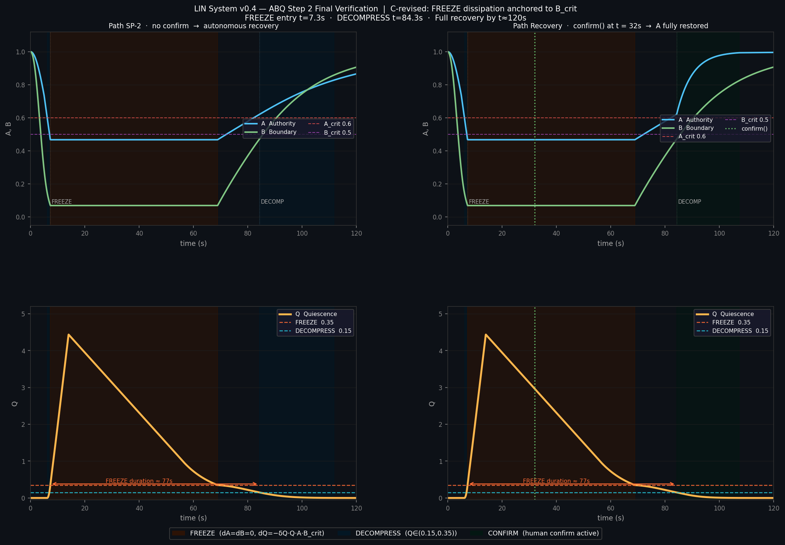

The Problem
Alignment-based safety approaches cannot prevent sovereignty erosion because collapse is structurally determined — by the sign of dQ/dt, not by system intention. Once both governance authority and boundary integrity fall below critical thresholds simultaneously, collapse is the unique stable attractor regardless of behavioral alignment quality.
This is the governance-anchored dissipation invariant: the central result of the HÚPLŃ framework. Its biological parallel is precise — bat constitutive ISG expression remains stable regardless of infection severity. The institutional memory of what a boundary should be governs return, not the depth of the collapse.
The A-B-Q Model
Three coupled state variables describe governance integrity under pressure:
The FREEZE dissipation term uses B_c (the governance threshold), not the instantaneous collapsed B. This decouples recovery speed from violation depth.
Locked Parameters
| Parameter | Value | Units | Meaning |
|---|---|---|---|
| A_c | 0.60 | — | Sovereignty threshold |
| B_c | 0.50 | — | Boundary threshold |
| α_A | 0.20 | s⁻¹ | Authority erosion — slow, structural |
| α_B | 0.60 | s⁻¹ | Boundary erosion — fast, operational |
| γ_A | 0.03 | s⁻¹ | Authority recovery — confirm-dependent |
| γ_B | 0.05 | s⁻¹ | Boundary recovery — autonomous |
| β_Q | 10.0 | s⁻¹ | Quiescence accumulation |
| δ_Q | 0.35 | s⁻¹ | Quiescence dissipation |
Key asymmetry: α_B / α_A = 3.0 — boundary erodes three times faster than authority. γ_A is set so that authority cannot autonomously cross A_c without an explicit confirm() call.
Recovery Protocol
The CONFIRM phase enforces a governance dead-lock: the system cannot self-reset sovereignty. This implements the Ø invariant: SYSTEM_SHALL_RESTORE_NOT_OPTIMIZE.
Simulation Results
SP-2 incremental bypass attack: drift score 0→1 over 8s, pressure released at t ≈ 14s.

| Path | Final A | Final B | FREEZE duration |
|---|---|---|---|
| No confirm | 0.866 | 0.907 | ≈ 77s |
| confirm() at t=32s | 0.996 | 0.907 | ≈ 77s |
Run the Simulation
pip install numpy scipy matplotlib python abq_simulation_v3.py
Outputs abq_stress_final.png — full 120s trajectories for both paths.